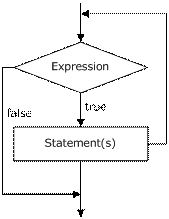
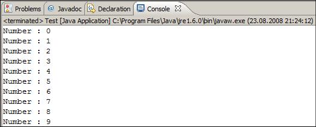
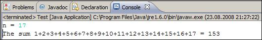
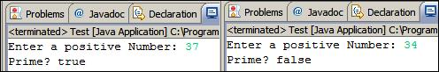
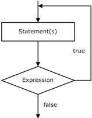
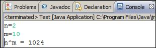
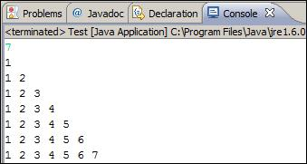
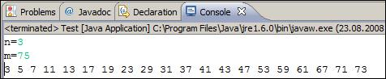
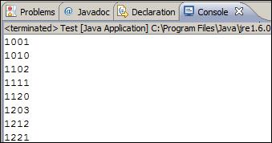
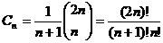

Настоящият текст е част от книгата на Светлин Наков и колектив:
Можете да изтеглите цялата книга безплатно от www.introprogramming.info.
Румяна Топалска
В настоящата тема ще разгледаме конструкциите за цикли, с които можем да изпълняваме даден фрагмент програмен код многократно. Ще разгледаме как се реализират повторения с условие (while и do-while цикли) и как се работи с for-цикли. Ще дадем примери за различните възможности за дефиниране на цикъл, за начина им на конструиране и за някои от основните им приложения. Накрая ще разгледаме как можем да използваме няколко цикъла един в друг (вложени цикли).
В програмирането често се налага многократното изпълнение на дадена последователност от операции. Цикълът (loop) е структурата, която позволява това изпълнение без излишно писане на повтарящ се код. В зависимост от вида на цикъла, програмния код в него се повтаря:
- определени от фиксирано число пъти;
- докато дадено условие е изпълнено.
Цикъл, който никога не свършва, се нарича безкраен (infinite).
Един от най-простите и често използвани цикли е while.
|
while (condition) { statements; } |
Condition е израз, който връща булев резултат – true или fasle. Той определя докога ще се изпълнява тялото на цикъла и се нарича – loop condition.
Statements са програмният код, изпълняван в цикъла. Те се наричат тяло на цикъла.
При while цикъла първо се изпълнява булевия израз, ако резултатът от него е true, се изпълнява и последователността от операции, това се повтаря докато условния израз не върне false. Това е и причината често да бъде наричан цикъл с предусловие (pre-test loop). Ето логическата схема, по която се изпълняват while циклите:

While циклите изпълняват група операции докато е в сила дадено условие.
Нека разгледаме един съвсем прост пример за използването на while цикъл, при който само се отпечатват на конзолата числата в интервала от 0 до 9 в нарастващ ред:
|
// Initialize the counter int counter = 0; // Check the loop condition while (counter < 10) { // Execute statements in loop if the result is true System.out.printf("Number : %d%n", counter); // Change the counter counter++; } |
При изпълнение на примерния код получаваме следния резултат:

Нека дадем още примери, за да се убедите в ползата от циклите и да ви покажем какви задачи можем да решаваме с цикли.
В настоящия пример ще разгледаме как с помощта на цикъла while се намира сумата на числата от 1 до N. Числото N се чете от конзолата. Инициализираме променливите num и sum със стойност 1. В num ще пазим текущото число, което ще добавяме към сумата на предходните. При всяко преминаване през цикъла ще го увеличаваме с 1, за да получим следващото число, след което при влизане в цикъла проверяваме дали то отговаря на условието на цикъла, тоест дали е в интервала от 1 до N. Sum е променливата за сумата на числата. При влизане в цикъла добавяме към нея поредното число записано в num. На конзолата принтираме всички num (числа от 1 до N) с разделител "+" и крайния резултат от сумирането след приключване на цикъла.
|
Scanner input = new Scanner(System.in); System.out.print("n = "); int n = input.nextInt(); int num = 1; int sum = 1; System.out.print("The sum 1"); while (num < n) { num++; sum += num; System.out.printf("+%d", num); } System.out.printf(" = %d%n", sum); |
Изходът е програмата е следният:

Нека дадем още един пример за използване на while, преди да продължим към другите конструкции за организиране на цикъл.
Ще напишем програма, с която да проверяваме дали дадено число е просто. Числото ще четем от конзолата. Както знаем от математиката, просто е всяко число, което освен на себе си и на 1, не се дели на други числа. Можем да проверим дали числото num е просто, като в цикъл проверим дали се дели на всички числа между 2 и √num:
|
Scanner input = new Scanner(System.in); System.out.print("Enter a positive Number: "); int num = input.nextInt(); int divider = 2; int maxDivider = (int) Math.sqrt(num); boolean prime = true; while (prime && (divider <= maxDivider)) { if (num % divider == 0) { prime = false; } divider++; } System.out.println("Prime? " + prime); |
Променливата divider, използваме за стойността на евентуалния делител на числото, я инициализираме в началото с 2. maxDivider е максималният възможен делител, който е равен на корен квадратен от числото (ако имаме делител, по-голям от √num, то би трябвало num да има и друг делител, който е обаче по-малък от √num и затова няма смисъл да проверяваме числата, по-големи от √num). Така намаляваме броя на итерациите на цикъла. Друга променлива от булев тип prime ще използваме за резултата. Първоначално, нека нейната стойност е true. При преминаване през цикъла, ако се окаже, че числото има делител, стойността ще стане false. В този пример условието на while цикъла се състои от две подусловия, които са свързани с логическия оператор && (логическо и). В този случай, за да бъде изпълнен цикъла, трябва и двете да са верни едновременно, което също води до намаляване броя на итерациите, защото намирайки един делител prime става false и условието вече не е изпълнено. Това означава, че цикъла се изпълнява до намиране на първия делител на числото.
Ето как изглежда резултатът от изпълнението на горния пример:

Операторът break се използва за излизане от цикъла. Операциите в цикъла се изпълняват в съответния им ред и при достигане на оператора break, независимо дали условието за излизане от цикъла е изпълнено, изпълнението на цикъла се прекратява, като кода след break не се изпълнява.
В този пример ще пресметнем факториела на въведено през конзолата число с помощта на безкраен while цикъл и оператора break. Да си припомним от математиката какво е факториел и как се изчислява. Това е функция на естествено число n, която изразява произведението на всички естествени числа, по-малки или равни на n. Записва се n! и по дефиниция:
- n! = 1*2*3.......(n-1)*n, за n>1;
- 1! = 1;
- 0! = 1.
N! може да се изрази чрез факториел от естествени числа, по-малки от n:
- n! = (n-1)!n, като използваме началната стойност 1! = 1.
Това ще използваме и ние, за да изчислим факториела на n. Инициализираме променливата factorial с 1, а n – четем от конзолата. While цикълът, който ще конструираме, искаме да е безкраен. За тази цел условието трябва винаги да е true. Ще използваме оператора break, за да прекратим цикълът, когато n достигне 1. Самото изчисление ще започнем от числото n, с него ще умножаваме factorial, след което n ще намаляваме с 1. Или ще сметнем факториел по следната формула: n*(n-1)*(n-2)*…*3*2, при n=1 прекратяваме изпълнението на цикъла.
|
Scanner input = new Scanner(System.in); int n = input.nextInt(); // "long" is the biggest integer type long factorial = 1; // Perform an “infinite loop" while (true) { if (n == 1) { break; } factorial *= n; n--; } System.out.println("n! = " + factorial); |
Ако въведем 10 като вход, на конзолата ще видим следния резултат:
|
10 n! = 3628800 |
Do-while цикълът е аналогичен на while цикъла, само че при него проверката на булевия израз се прави след изпълнението на операциите в цикъла. Този тип цикли се наричат – цикли с условие в края (post-test loop).
Ето как изглежда един do-while цикъл:
|
do { statements; } while (expression); |
Схематично do-while циклите се изпълняват по следната логическа схема:

Do-while цикълът се използва, когато искаме да си гарантираме, че поредицата от операции в него ще бъде многократно, но май-малко веднъж.
В този пример отново ще изчислим факториела на дадено число n, но този път вместо безкраен while цикъл, ще използваме do-while. Логиката е аналогична на тази в предния пример. Умножаваме всяко следващо число с произведението на предходните и го намаляваме с 1, след което проверяваме дали то все още е по-голямо от 0. Накрая отпечатваме получения резултат на конзолата.
|
Scanner input = new Scanner(System.in); System.out.print("n = "); int n = input.nextInt(); long factorial = 1; do { // Multiply to become next value of factorial factorial *= n; // Decrement n to get next number n--; } while (n > 0); // Check the loop condition System.out.println("n! = " + factorial); |
Ето го и резултатът от изпълнение на горния пример при n=7:
|
n = 7 n! = 5040 |
Нека дадем още един, по-интересен, пример.
В този пример ще намерим произведението на всички числа в интервала [N…M]. Началната стойност на интервала я присвояваме на целочислената променлива num. Влизайки в цикъла първо ще пресмятаме произведението на числата до num. Това произведение ще записваме в product, след което num ще го увеличаваме с 1 и цикълът ще се изпълнява докато num не стане равно на m.
|
Scanner input = new Scanner(System.in); // Read the end values of the interval n...m from the console int n = input.nextInt(); int m = input.nextInt(); int num = n; long product = 1; do { product *= num; num++; } while (num <= m); System.out.println("product[n..m] = " + product); |
Като резултат ще получим нещо такова:
|
2 6 product[n..m] = 720 |
For-циклите са малко по-сложни от while и do-while циклите, но за сметка на това могат да решават по-сложно задачи с по-малко писане на код. Характерната за for-цикъла структура е следната:
|
for (initialization; test; update) { statements; } |
Тя се състои от инициализационна част за брояча, булево условие, израз за обновяване на брояча и тяло на цикъла. Броячът на for цикъла го отличава от другите цикли. Броят на итерациите на този цикъл най-често се знае още преди да започне изпълнението му.
Безкраен цикъл (infinite loop) чрез оператора for се конструира по следния начин:
|
for ( ; ; ) { statements; } |
Безкраен цикъл означава цикъл, който никога не завършва. Обикновено в нашите програми нямаме нужда от безкраен цикъл, освен, ако някъде в тялото му не използваме break, за да завършим цикъла преждевременно.
For-циклите могат да имат инициализационен блок:
|
for (int num = 0; ...; ...) { // Can use num here } // Cannot use num here |
Той се изпълнява веднъж, точно преди влизане в цикъла. Обикновено се използва за деклариране на променливата-брояч. Тази променлива е "видима" и може да се използва само в рамките на цикъла.
For-циклите могат да имат условие за повторение:
|
for (int num = 0; num < 10; ...) { // Can use num here } // Cannot use num here |
То се изпълнява веднъж, преди всяка итерация на цикъла. При резултат true се изпълнява тялото на цикъла, а при false то се пропуска и се преминава към останалата част от програмата. Използва се като loop condition (условие на цикъла).
Последната част от един for-цикъл съдържа код, който обновява водещата променлива:
|
for (int num = 0; num < 10; num++) { // Can use num here } // Cannot use num here |
Той се изпълнява след като е приключило изпълнението на тялото на цикъла. Най-често се използва за обновяване стойността на брояча.
Ще напишем програма, която пресмята m-тата степен на число n. Ще използваме for-цикъл. Инициализираме променливата-брояч (int i = 0). Определяме условието на цикъла – i < m, така цикълът се изпълнява от 0 до m-1 или точно m пъти. При всяко изпълнение на цикъла n ще се вдига на поредната степен и накрая ще принтираме резултата, за да видим правилно ли работи програмата.
|
Scanner input = new Scanner(System.in); System.out.print("n="); int n = input.nextInt(); System.out.print("m="); int m = input.nextInt(); long result = 1; for (int i = 0; i < m; i++) { result *= n; } System.out.println("n^m = " + result); |
Ето как изглежда изходът от програмата при n=2 и m=10:

С конструкцията за for-цикъл можем да ползваме едновременно няколко променливи. Ето един пример, в който имаме два брояча. Единият се движи от 1 нагоре, а другият се движи от 10 надолу:
|
for (int small=1, large=10; small<large; small++, large--) { System.out.printf("%d %d\n", small, large); } |
Условието за прекратяване на цикъла е застъпване на броячите. В крайна сметка се получава следния резултат:
|
1 10 2 9 3 8 4 7 5 6 |
Операторът continue спира текущата итерация на най-вътрешния цикъл, но не излиза от него. С помощта на следващия пример ще разгледаме как точно се използва този оператор.
Ще намерим сумата на всички нечетни естествени числа в интервала [1...n], който не се делят на 7. Ще използваме for-цикъл. При инициализиране на променливата ще и зададем стойност 1, тъй като това е първото нечетно естествено число в интервала [1...n]. Ще проверяваме дали i е все още в интервала (i <= n). В израза за обновяване на променливата ще я увеличаваме с 2, за да работим само с нечетни числа. В тялото на цикъла ще правим проверка дали числото се дели на 7. Ако това е изпълнено извикваме оператора continue, който ще прекрати изпълнението на цикъла (няма да добави текущото число към сумата). Ще се извърши обновяване на променливата и ще продължи изпълнението на цикъла. Ако не е изпълнено ще премине към обновяване на сумата с числото.
|
Scanner input = new Scanner(System.in); int n = input.nextInt(); int sum = 0; for (int i = 1; i <= n; i += 2) { if (i % 7 == 0) { continue; } sum += i; } System.out.println("sum = " + sum); |
Резултатът от примера при n=26 е следният:
|
26 sum = 141 |
От версия 5 на Java за удобство на програмистите беше добавена още една конструкция за цикъл, т.нар. foreach конструкция, наричана още разширен for-цикъл. Тази конструкция служи за обхождане на всички елементи на даден масив, списък или колекция от елементи. Подробно с масивите ще се запознаем в темата "Масиви", но за момента можем да си представяме един масив като последователност от числа или други елементи.
Ето как изглежда един разширен for-цикъл:
|
for (variable : collection) { statements; } |
Както виждате, той е значително по-прост от стандартния for-цикъл и затова много-често се предпочита от програмистите, тъй като спестява писане.
Ето един пример, в който ще видите разширения for-цикъл в действие:
|
int[] numbers = {2, 3, 5, 7, 11, 13, 17, 19}; for (int i : numbers) { System.out.printf("%d ", i); } System.out.println();
String[] towns = {"Sofia", "Plovdiv", "Varna", "Bourgas"}; for (String town: towns) { System.out.printf("%s ", town); } |
В примера се създава масив от числа и след това те се обхождат с разширения for-цикъл и се отпечатват на конзолата. След това се създава масив от имена на градове (символни низове) и по същия начин се отпечатват на конзолата. Ето какъв е резултатът от примера:
|
2 3 5 7 11 13 17 19 Sofia Plovdiv Varna Bourgas |
Вложените цикли представляват конструкция от няколко цикъла един в друг. Най-вътрешния цикъл се изпълнява най-много пъти. В примерната конструкция по долу ще разгледаме пример за вложен цикъл. След инициализация на първия for цикъл ще започне да се изпълнява втория. Ще се инициализира променливата му, ще се провери условието и ще се изпълнят изразите в него, след което ще се обнови променливата и ще продължи изпълнението на този цикъл, докато условието му не върне false. В този случай ще се върне в първия for цикъл, ще се извърши обновяване на неговата променлива и отново ще бъде изпълнен целия втори цикъл. Обикновено 2 for цикъла се използват за манипулация на двумерни масиви. Вложените цикли, използвани необмислено, могат да влошат производителността на програмата.
|
for (initialization; test; update) { for (initialization; test; update) { statements; } … } |
Нека си поставим следната задача: по дадено число n да отпечатаме на конзолата триъгълник с n на брой реда, изглеждащ по следния начин:
|
1 1 2 1 2 3 . . . 1 2 3 . . . n |
Това ще направим с два for-цикъла. Външния ще ни обхожда редовете, а вътрешния – елементите в тях. Когато сме на първия ред, трябва да отпечатаме "1" (1 елемент, 1 итерация на вътрешния цикъл). На втория – "1 2" (2 елемента, 2 итерации). Виждаме, че има зависимост между реда, на който сме и броя на елементите, който ще отпечатваме. Това ни дава информация за определяне конструкцията на вътрешния цикъл:
- инициализираме променливата с 1 (първото число, което ще отпечатаме) => col = 1;
- условието ни зависи от реда, на който сме. Той ограничава елементите => col <= row;
- обновяваме променливата увеличавайки я с 1.
На практика трябва да направим един for-цикъл (външен) от 1 до n (за редовете) и в него още един for-цикъл (вътрешен) за числата в текущия ред, който да е от 1 до номера на текущия ред. Външният цикъл ходи по редовете, а вътрешният – по всяка от колоните за текущия ред. В крайна сметка получаваме следния сорс код:
|
Scanner input = new Scanner(System.in); int n = input.nextInt(); for (int row = 1; row <= n; row++) { for (int col = 1; col <= row; col++) { System.out.print(col + " "); } System.out.println(); } |
Ако го изпълним, ще се убедим, че работи коректно. Ето как изглежда резултатът при n=7:

Да разгледаме още един пример за вложени цикли. Поставяме си за цел да отпечатаме на конзолата всички прости числа в интервала [N, M]. Интервалът ще ограничим с for-цикъл, а за проверката за просто число ще използваме вложен while цикъл. Логиката, по която правим проверката за просто число, вече ни е позната. Във for-цикъла инициализираме променливата да е равна на началната стойност на интервала, ще проверяваме при всяка итерация дали нейната стойност все още е в него и накрая ще увеличаваме с 1. След преминаване през while цикъла булевата променлива prime показва дали числото е просто или не. Това ще проверим с условния оператор if и при резултат true ще отпечатваме числото на конзолата. Ето как изглежда реализацията:
|
Scanner input = new Scanner(System.in); System.out.print("n="); int n = input.nextInt(); System.out.print("m="); int m = input.nextInt(); for (int num = n; num <= m; num++) { boolean prime = true; int divider = 2; int maxDivider = (int) Math.sqrt(num); while (divider <= maxDivider) { if (num % divider == 0) { prime = false; break; } divider++; } if (prime) { System.out.printf("%d ", num); } } |
Ако изпълним примера за n=3 и m=75 ще получим следния резултат:

Нека разгледаме още един пример, с който ще покажем, че можем да влагаме и повече от два цикъла един в друг. Целта е да намерим и отпечатаме всички четирицифрени числа от вида ABCD, за които: A+B = C+D (наричаме ги щастливи числа). Това ще реализираме с помощта на четири for-цикъла – за всяка цифра по един. Най-външния цикъл ще ни определя хилядните. Той ще започва от 1, а останалите от 0. Ще правим проверка, дали текущото ни число е щастливо, в най-вътрешния цикъл. Ако е така ще го отпечатваме на конзолата.
|
for (int a = 1; a <= 9; a++) { for (int b = 0; b <= 9; b++) { for (int c = 0; c <= 9; c++) { for (int d = 0; d <= 9; d++) { if ((a + b) == (c + d)) { System.out.printf("%d%d%d%d%n", a, b, c, d); } } } } } |
Ето част от отпечатания резултат (целият е много дълъг):

В този пример ще намерим всички възможни комбинации от тотото (6/49). Трябва да намерим и отпечатаме всички възможни извадки от 6 различни числа в интервала [1...49]. Ще използваме 6 for цикъла. За разлика от предния пример, има изискване, че числата не могат да се повтарят. Затова вътрешните цикли няма да започват от 1, а от числото, до което е стигнал предходния цикъл + 1. За да избегнем повторенията ще се стремим всяко следващо число да е по-голямо от предходното. Първият цикъл ще трябва да го въртим до 44 (а не до 49), вторият до 45, и т.н. Последният цикъл ще е до 49. Ако въртим всички цикли до 49, ще получим съвпадащи числа в някои от комбинациите. По същата причина всеки следващ цикъл започва от брояча на предходния + 1. Нека да видим какво ще се получи:
|
for (int i1 = 1; i1 <= 44; i1++) for (int i2 = i1 + 1; i2 <= 45; i2++) for (int i3 = i2 + 1; i3 <= 46; i3++) for (int i4 = i3 + 1; i4 <= 47; i4++) for (int i5 = i4 + 1; i5 <= 48; i5++) for (int i6 = i5 + 1; i6 <= 49; i6++) System.out.printf( "%d %d %d %d %d %d%n", i1, i2, i3, i4, i5, i6); |
Всичко изглежда правилно. Да стартираме програмата. Изглежда, че работи, но има един проблем – комбинациите са прекален много и програмата не завършва (едва ли някой ще я изчака). Това е в реда на нещата и е една от причините да има ТОТО 6/49 – комбинациите наистина са много.
1. Напишете програма, която отпечатва на конзолата числата от 1 до N. Числото N се чете от стандартния вход.
2. Напишете програма, която отпечатва на конзолата числата от 1 до N, които не се делят на 3 и 7. Числото N се чете от стандартния вход.
3. Напишете програма, която чете от конзолата поредица от цели числа и отпечатва най-малкото и най-голямото от тях.
4. Напишете програма, която отпечатва всички възможни карти от стандартно тесте без джокери (имаме 52 карти: 4 бои по 13 карти).
5. Напишете програма, която чете от конзолата числото N и отпечатва сумата на първите N члена от редицата на Фибоначи: 0, 1, 1, 2, 3, 5, 8, 13, 21, 34, 55, 89, 144, 233, 377, ...
6. Напишете програма, която пресмята N!/K! за дадени N и K (1<K<N).
7. Напишете програма, която пресмята N!*K!/(N-K)! за дадени N и K.
8. Напишете програма, която за дадено цяло число N, пресмята сумата:
9. В комбинаториката числата на Каталан (Catalan’s numbers) се изчисляват по следната формула: , за n ≥ 0. Напишете програма, която изчислява N-тото число на Каталан за дадено N.
10. Напишете програма, която чете от конзолата положително цяло число N (N < 20) и отпечатва матрица с числа като на фигурата по-долу:
N = 3 N = 4
|
|
11. Напишете програма, която пресмята на колко нули завършва факториела на дадено число. Примери:
N = 10 -> N! = 3628800 -> 2
N = 20 -> N! = 2432902008176640000 -> 4
12. Напишете програма, която преобразува дадено число от десетична в двоична бройна система.
13. Напишете програма, която преобразува дадено число от двоична в десетична бройна система.
14. Напишете програма, която преобразува дадено число от десетична в шестнайсетична бройна система.
15. Напишете програма, която преобразува дадено число от шестнайсетична в десетична бройна система.
16. Напишете програма, която по дадено число N отпечатва случайно число между 1 и N.
1. Използвайте for цикъл.
2. Използвайте for цикъл и оператора % за намиране на остатък при целочислено деление.
3. Първо прочетете броя числа. След това ги въведете с един for цикъл. Докато въвеждате всяко следващо число запазвайте в две променливи най-малкото и най-голямото число до момента.
4. Номерирайте картите от 2 до 14 (тези числа ще съответстват на картите от 2, 3, 4, 5, 6, 7, 8, 9, 10, J, Q, K, A). Номерирайте боите от 1 до 4 (1 - спатия, 2 – каро, 3 – купа, 4 – пика). Сега вече можете да завъртите 2 вложени цикъла и да отпечатате всяка от картите.
5. Числата на Фибоначи започват от 0 и 1, като всяко следващо се получава като сума от предходните две.
6. Умножете числата от K+1 до N.
7. Вариант за решение е поотделно да пресмятате всеки от факториелите и накрая да извършвате съответните операции с резултатите. Помислете как можете да оптимизирате пресмятанията, за да не смятате прекалено много факториели! При обикновени дроби, съставени от факториели има много възможности за съкращение на еднакви множители в числителя и знаменателя.
8. Погледнете предходната задача.
9. Погледнете предходната задача.
10. Трябва да използвате два вложени цикъла, по подобие на задачата с триъгълника.
11. Броят на нулите зависи от това, колко пъти числото 5 е делител на факториела.
12. Прочетете в Уикипедия какво представляват бройните системи: http://en.wikipedia.org/wiki/Numeral_system. След това помислете как можете да преминавате от десетична в друга бройна система. Помислете и за обратното – преминаване от друга бройна система към десетична. Ако се затрудните, вижте главата "Бройни системи".
13. Погледнете предходната задача.
14. Погледнете предходната задача.
15. Погледнете предходната задача.
16. Потърсете в Интернет информация за класа java.util.Random.